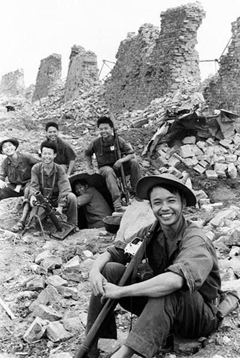
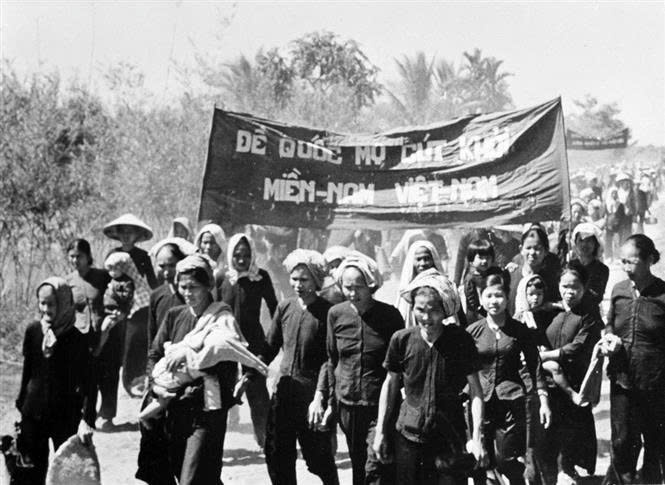
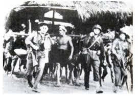
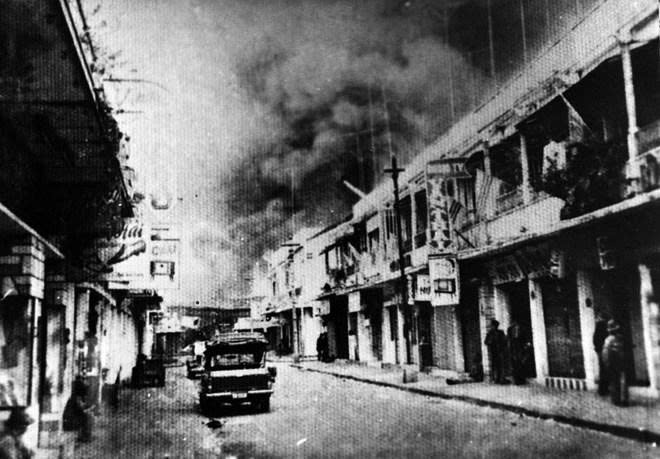
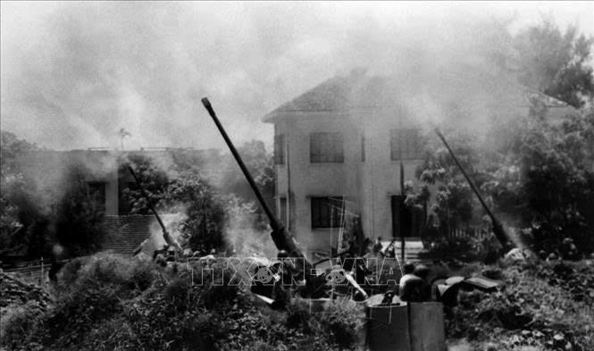
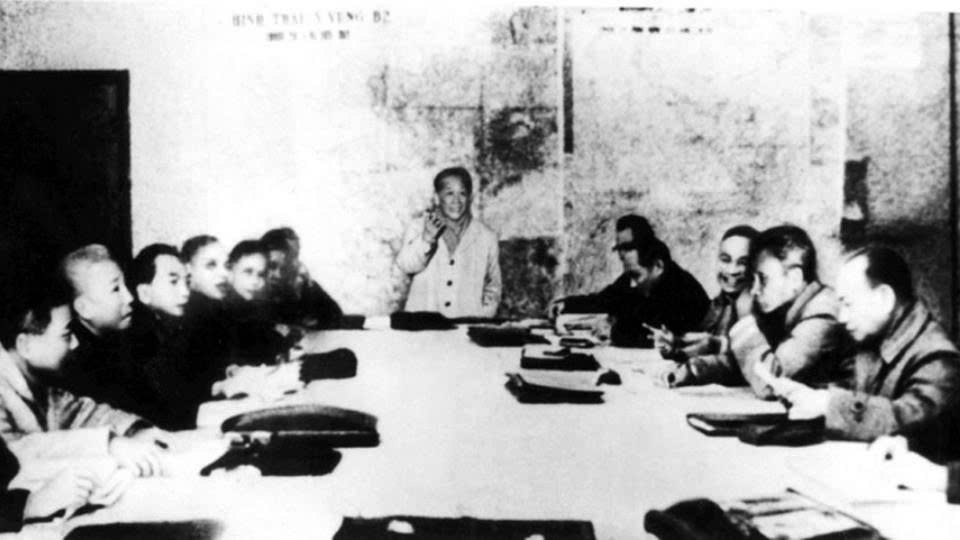
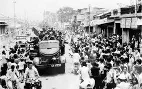

← Quay lại
Kháng Chiến Chống Mỹ, Cứu Nước (1954–1975)
Bài giảng chính
Video giảng bài chi tiết — Bài 8
Bài giảng điện tử
PowerPoint — Bài 8
💡 Dùng phím ← → để chuyển slide. Nhấn nút toàn màn hình để xem đầy đủ.
Tổng kết kiến thức
Sơ đồ tư duy — Bài 8
Sơ đồ tư duy — Bài 8
Sơ đồ tư duy tổng kết toàn bộ kiến thức Kháng chiến chống Mỹ, cứu nước 1954–1975.
Nhấn nút bên dưới để mở và tương tác đầy đủ.
Mở trong tab mới · Miễn phí · Không cần đăng nhập
💡 Vào MindMeister để kéo di chuyển, phóng to/thu nhỏ và xem chi tiết từng nhánh.
Tư liệu lịch sử
Tư liệu & Kho ảnh lịch sử
🎤 Podcast kể chuyện lịch sử
Spotify Podcast
Kháng chiến chống Mỹ — Kể chuyện lịch sử
Tường thuật lại hành trình 21 năm kháng chiến chống Mỹ, cứu nước — từ Đồng khởi đến Đại thắng mùa Xuân 30/4/1975.
Spotify Podcast
Kháng chiến chống Mỹ — Tập 2
Tóm lược về trận chiến bảo vệ Thành cổ Quảng Trị mùa hè 1972
📹 Video tư liệu
Tư liệu
Video tư liệu Bài 8 (1)
Tư liệu
Video tư liệu Bài 8 (2)
📷 Ảnh tư liệu lịch sử

Bức ảnh Nụ cười chiến thắng bên Thành cổ Quảng Trị (Doãn Công Tính chụp)

Nhân dân Bến Tre biểu tình trong phong trào Đồng Khởi (1960)

Phá "ấp chiến lược" khiêng nhà về nơi ở cũ

Quân Giải phóng làm chủ đường Lê Lợi (Sài Gòn) trong cuộc Tổng tiến công và nổi dậy Xuân Mậu Thân năm 1968

Đại đội 4 pháo cao xạ bảo vệ bầu trời Hà Nội trong trận "Điện Biên Phủ trên không" năm 1972

Bộ Chính trị họp Hội nghị mở rộng quyết định kế hoạch giải phóng miền Nam (1-1975)

Nhân dân Sài Gòn chào mừng Quân Giải phóng tiến vào thành phố (30-4-1975)
Ôn thi nhanh
Cẩm nang từ khóa vàng — Bài 8
| Giai đoạn / Sự kiện | Từ khóa | ⚠️ Lưu ý & Ý nghĩa |
|---|---|---|
| 1954–1960: Thực dân kiểu mới | Mỹ thay chân Pháp; Ngô Đình Diệm; Chia cắt lâu dài | Mỹ không trực tiếp cai trị mà thông qua tay sai và viện trợ — Chủ nghĩa thực dân kiểu mới. |
| 1959–1960: Phong trào "Đồng khởi" | Nghị quyết 15; Bến Tre; "Đội quân tóc dài"; MTDTGPMNVN | Bước ngoặt quan trọng — CM miền Nam chuyển từ giữ gìn lực lượng sang thế tiến công. |
| 1961–1965: "Chiến tranh đặc biệt" | "Ấp chiến lược" (quốc sách); Cố vấn Mỹ; Trực thăng vận, Thiết xa vận | Công thức: Quân đội Sài Gòn + Vũ khí & cố vấn Mỹ. Mục tiêu: dùng người Việt đánh người Việt. |
| 1965–1968: "Chiến tranh cục bộ" | Quân Mỹ trực tiếp tham chiến; Vạn Tường; Mậu Thân 1968 | Quy mô lớn nhất, ác liệt nhất. Mậu Thân 1968 buộc Mỹ "phi Mỹ hóa" — thừa nhận thất bại. |
| 1969–1973: "Việt Nam hóa chiến tranh" | "Dùng người Đông Dương đánh người Đông Dương"; Mở rộng sang Lào, Campuchia | Mỹ rút dần quân, tăng sức mạnh quân Sài Gòn — giảm xương máu người Mỹ trên chiến trường. |
| 1972: "Điện Biên Phủ trên không" | 12 ngày đêm; Máy bay B-52; Hà Nội – Hải Phòng | Thắng lợi quân sự quyết định buộc Mỹ ký Hiệp định Pa-ri (1973) và rút quân về nước. |
| 1973: Hiệp định Pa-ri | "Mỹ cút"; So sánh lực lượng thay đổi hoàn toàn có lợi cho ta | Hoàn thành mục tiêu "Đánh cho Mỹ cút", tạo tiền đề để "Đánh cho Ngụy nhào". |
| 1975: Tổng tiến công Xuân 1975 | Đường 14 – Phước Long (trinh sát); Tây Nguyên (mở đầu); Chiến dịch Hồ Chí Minh (kết thúc) | Thắng lợi trọn vẹn — kết thúc 21 năm kháng chiến chống Mỹ, thống nhất đất nước. |
Công nghệ cao · Phần đinh của web
Trải nghiệm VR / 3D — Di tích kháng chiến chống Mỹ
Chọn không gian bạn muốn khám phá:
6 trải nghiệm thực tế ảo tại các di tích lịch sử kháng chiến chống Mỹ — nhấn để tải.
📱 Quét QR
Địa đạo Củ Chi
Khám phá hệ thống địa đạo huyền thoại — biểu tượng ý chí kiên cường của quân dân Củ Chi
▶ Tham quan
📡 Kéo chuột để nhìn xung quanh
📱 Quét QR
Thành cổ Quảng Trị (1)
Tham quan Thành cổ Quảng Trị — nơi diễn ra 81 ngày đêm chiến đấu anh dũng năm 1972
▶ Tham quan
📡 Kéo chuột để nhìn xung quanh
📱 Quét QR
Thành cổ Quảng Trị (2)
Khám phá không gian di tích Thành cổ với các hiện vật và tư liệu lịch sử quý giá
▶ Tham quan
📡 Kéo chuột để khám phá
📱 Quét QR
Đài tưởng niệm Quảng Trị
Tham quan đài tưởng niệm các chiến sĩ hy sinh anh dũng tại mặt trận Quảng Trị
▶ Tham quan
📡 Kéo chuột để nhìn xung quanh
📱 Quét QR
Máy bay ném bom B-52
Khám phá mô hình 3D chi tiết máy bay ném bom chiến lược hạng nặng B-52 của Không quân Hoa Kỳ
▶ Tham quan
📡 Kéo chuột để khám phá
📱 Quét QR
Dinh Độc Lập
Khám phá Dinh Độc Lập — nơi xe tăng quân giải phóng húc đổ cổng lúc 11h30 ngày 30/4/1975
▶ Tham quan
📡 Kéo chuột để nhìn xung quanh
Hội nghị nào quyết định cho nhân dân miền Nam sử dụng bạo lực cách mạng?
Hội nghị Trung ương 15 (1/1959)
Ý nghĩa lớn nhất của phong trào "Đồng khởi"?
Chuyển CM từ giữ gìn lực lượng sang thế tiến công
"Quốc sách" của chiến lược Chiến tranh đặc biệt là gì?
Ấp chiến lược
Chiến thắng mở đầu khả năng đánh bại "Chiến tranh đặc biệt"?
Chiến thắng Ấp Bắc (1/1963)
Lực lượng "quyết định nhất" tại Đại hội III (1960)?
Cách mạng miền Bắc
Lực lượng "quyết định trực tiếp" tại Đại hội III (1960)?
Cách mạng miền Nam
Chiến thắng đầu tiên chống "Chiến tranh cục bộ" của Mỹ?
Chiến thắng Vạn Tường (8/1965)
Bước ngoặt buộc Mỹ phải "phi Mỹ hóa" chiến tranh?
Tổng tiến công Xuân Mậu Thân 1968
Lực lượng chiến đấu chủ yếu trong "Việt Nam hóa chiến tranh"?
Quân đội Sài Gòn
Thắng lợi buộc Mỹ ký Hiệp định Pa-ri 1973?
Trận "Điện Biên Phủ trên không" cuối năm 1972
Điều khoản quan trọng nhất của Hiệp định Pa-ri?
Hoa Kỳ rút hết quân đội về nước
Chiến thắng "trinh sát" chứng tỏ Mỹ khó can thiệp trở lại?
Chiến thắng Đường 14 – Phước Long (1/1975)
Chiến dịch mở đầu Tổng tiến công Xuân 1975?
Chiến dịch Tây Nguyên
Chiến dịch kết thúc hoàn toàn cuộc kháng chiến chống Mỹ?
Chiến dịch Hồ Chí Minh
Xe tăng giải phóng húc đổ cổng Dinh Độc Lập khi nào?
11h30 ngày 30/4/1975
Kháng chiến chống Mỹ chấm dứt ách thống trị của chủ nghĩa nào?
Chủ nghĩa thực dân mới
Nguyên nhân quyết định nhất thắng lợi 1975?
Sự lãnh đạo sáng suốt của Đảng
Vai trò của miền Bắc đối với miền Nam trong kháng chiến?
Hậu phương lớn chi viện sức người, sức của
Biểu tượng của phụ nữ miền Nam trong phong trào Đồng khởi?
Đội quân tóc dài
Tổng cộng bao nhiêu năm kháng chiến chống Mỹ?
21 năm (1954–1975)
Học sâu · Trải nghiệm
Dự án & Hoạt động trải nghiệm
Podcast Lịch sử
Thu âm một tập podcast kể lại hành trình 21 năm kháng chiến chống Mỹ qua lời nhân chứng tưởng tượng.
Cá nhân / NhómTập làm phóng viên
Viết bài báo tường thuật thời khắc 11h30 ngày 30/4/1975 như một phóng viên tại Dinh Độc Lập.
Cá nhânNhật ký lịch sử
Viết nhật ký từ góc nhìn của một chiến sĩ trong chiến dịch Hồ Chí Minh mùa Xuân 1975.
Cá nhânTemplate Poster — Tự tóm tắt bài theo cách riêng
Tải template poster Bài 8, điền thông tin và trang trí theo phong cách của bạn. Một cách sáng tạo để ghi nhớ kiến thức!
🖼
In ra hoặc dùng trực tiếp trên máy tính — điền vào các ô kiến thức quan trọng của Bài 8.
↓ Tải poster về
{kind=link}